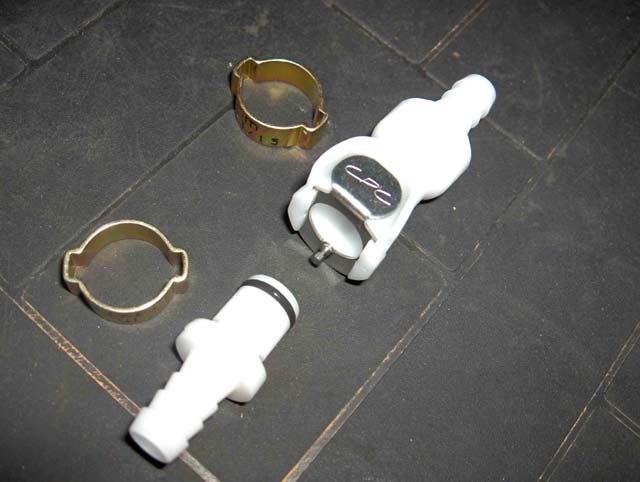
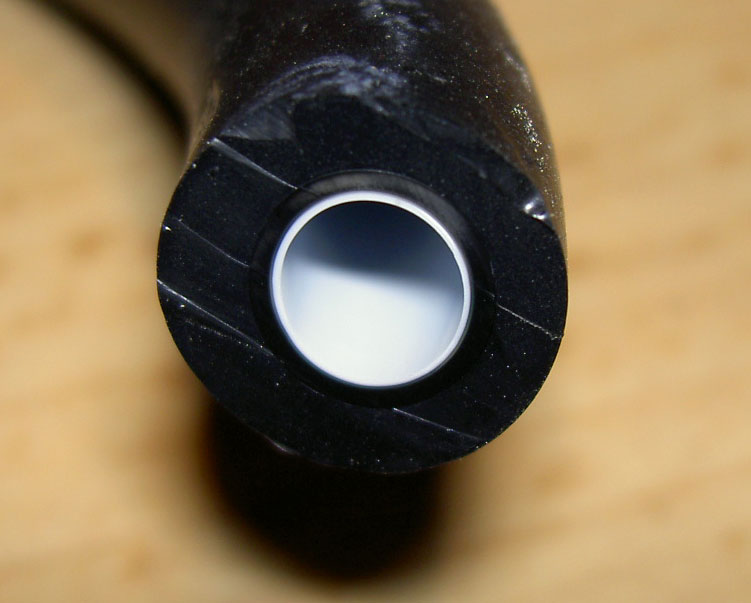
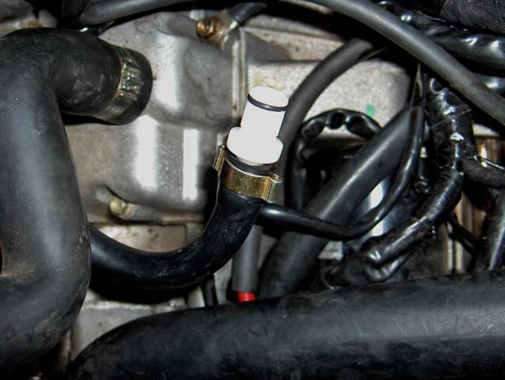
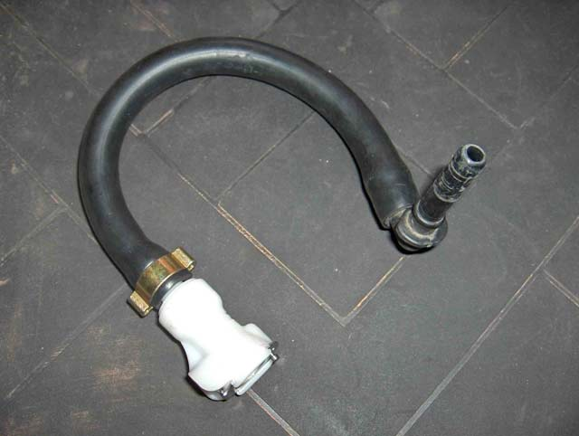

I got sick and tired of struggling with the fuel line every time I wanted to remove the tank. Generally it was a 2 man operation. It got harder when the tank tabs broke off, and the Benelli tool (#R180100143000) would no longer work. I had to sacrifice a pair of long nose pliers to make a tool that would expand the retaining clips in the "rapid unhooking petrol tube" (Benelli's words - see pg 120 in the Tre Manual), but these were just as difficult to use as the original one.
The new method for removing the tank involves lifting it up and forward (protect the top triple-clamp with a thick clean rag), sitting it on the frame, disconnecting the hoses and wiring, and removing it. Next to no fuel spillage, and a one man operation taking about 2 minutes. Not much different to before, but the cursing and swearing part has been removed from the procedure, along with some time.
The magic part is the addition of a Quick Release fuel line connector. It was sold by Touratech in
Germany,
USA
& Australia, but sadly, no more.
The Colder Parts Company (CPC) parts numbers for the dry break versions, are:-
for the 8 mm (5/16") ID hose, female / male - PLCD17005 / PLCD22005
& for the 6.25 mm (1/4") ID hose - PLCD17004 / PLCD2004
If you are in the US, they can be bought individually direct from CPC,
just enter the part numbers in their search box.
An alternative source,
Red Racing Parts,
will ship outside the US, currently only offer the 8 mm part and only as a pair.
The one I used is 8mm & seals the tank hose when it disconnects. The delivery side is open, which means some fuel will escape onto the garage floor, which while within acceptable limits, the totally sealed parts are preferred.
It's pictured below.
|
 |
 |
The hose itself is very stiff. The internal diameter is 6 mm, so it must be expanded before fitting the barb.
I forced an 8mm ball ended Allen (hex) key, into the core to expand it. The length of the expanded section must be
enough to allow the barb to slide in full length. If not, the barb is not strong enough to complete the job. It will
remain too short.
A better tool would be a 9mm ball fitted to the end of a 7mm rod. This would allow the expanded depth to be reached
more easily. As I only had 2 to do, I didn't bother making the tool.
The fuel line is shaped like an 'S' - I placed the connector at the inflection point.
Make sure you slide on the clamps before fitting the barb. If you want to get it off again, you'll have to cut the fuel line. The barbs work well.
|
 |
 |
I also heated the tank hose (right picture) in boiling water, and made the curve tighter.
Nick [nique from the Benelliforum] has also done this mod. He sourced the same (Motrax) fuel coupling from Sound Distribution in the UK, but that may not be possible anymore
A word of warning though. Very similar parts are available from several other sources, but many are not rated for EFI, ie. 43 psi, and will leak. The CPC parts are rated to 120 psi.